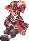
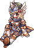
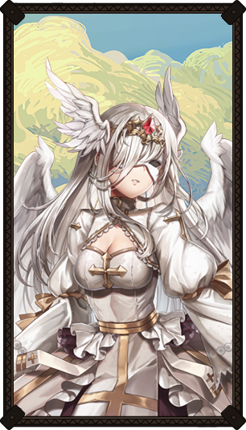
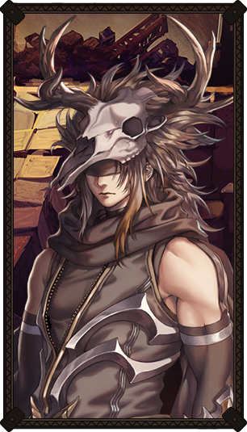

Seruel

Age: 26
Class: Minstrel
Role: Utility
Home: Hugel
Guild Membership: 12 years
Traits: Charming, charismatic, quick to laugh and quicker to joke.
|
Though he often has the air of "the clown", that is merely a projected image he displays for the world. When you get right down to it, Seruel can be a gravely serious man, although temperate; moved more to pity than to wrath, but not without a sense of conviction and justice.
He randomly met Reidin Kurs years ago and stowed away on a hunt. Seruel nearly died, but Reidin saved him. A lasting friendship began that day, and has not diminished with the passing years. Indeed, their friendship has only strengthened.
With Reidin's guidance, Seruel rapidly became one of the most renowned Monster Hunters in the Guild. Along the way, his magnetic personality attracted others, most notably those in his 'party'. With his leadership and their various talents, they have become the singular most proficient team in the Monster Hunting Guild.
|
Astrid

Age: 27
Class: Rune Knight
Role: Tank
Home: Prontera
Guild Membership: 9 years
Traits: Strong, serene, confident.
|
Where others may be boastful and prone to hubris, Astrid neither exaggerates nor downplays her abilities as a warrior. She is a badass, and knows she is, but she does not walk all over people; rather she is the kind to go head to head with whomever comes before her with restraint. Only using the measure of her abilities as she determines necessary to complete the task.
Years ago, she failed to rescue King Tristan III from Nameless Island. Distraught over her own failure, and despite the insistence of fellows in the Order of Knights, she departed from their ranks in self-imposed exile.
Her heart remained heavy for several years, never wholly recovering from the shock and dismay. But there came a time that a restless longing began to stir within her. The gleam of her armor would catch her eye and a pang of nostalgia stirred up fond memories of days long past. Her hand longed for the grip of her sword, her shoulders ached for the weight of her armor.
The guilt has never wholly left her, but with time she moved beyond it. While she could not bring herself to rejoin the ranks of the Order of Knights, her first venture onto the world stage was in the arena.
She quickly climbed the ranks, outshining even the most veteran combatants. It was this stellar rise that caught the attention of Reidin Kurs, and at one such event, he made his way to the sidelines to extend her an invitation to the Monster Hunting Guild.
|
Delphina


Age: 25
Class: Arch Bishop
Role: Healer
Home: Rachel
Guild Membership: 7 years
Traits: Uplifting, tenderhearted, kind.
|
She shares her insight and wisdom with those who are willing to listen, and will lend an ear to those with plights that they need to unburden themselves of. Always willing to lend a hand if she can, even at the expense of her own peace of mind.
Delphina left the Rachel Sanctuary when things began to turn for the worse. Heartbroken and disillusioned, she made her way to Lighthalzen, where she spent some time tending to the poor and downtrodden. But there was a hole in her heart she could not fill with these ministrations. Something greater called to her, though she did not know what it was.
It wasn't until she happened to cross paths with the Minstrel named Seruel that she had the first inklings as to where her heart was leading her. The grand challenge of Monster Hunting tested her limits, and in testing her, fostered an insight: this could bring her happiness, bring her fulfillment in a way she had never had before.
|
Sain


Age: 30
Class: Guillotine Cross
Role: Damage
Home: Morroc
Guild Membership: 6 years
Traits: Quiet, reserved, cunning.
|
Not uncaring, but a man of few words; words which he weighs carefully before sharing with others.
Sain rejected the dogma of the Assassins Guild, sought a better and more fulfilling life elsewhere in the world. Wandered far and wide, refusing multiple offers from various political activists seeking to spark revolution, or to off their rivals, or some other nonsense that didn't interest him at all.
It was in Umbala that he first caught wind of the Monster Hunting Guild, and immediately sought them out. It was then he met Reidin Kurs, and while the initial reception was chilly at best, they soon came to have an understanding. Mutual respect grew with time. Eventually he was introduced to Seruel, Astrid, and Delphina, and a kinship grew amidst them.
While he says very little, his mind is sharper than his blades, and on several occasions, it was his snap decisions that saved the party from disaster. His compatriots respect him, though they may not always understand him, they have come to rely upon him in many ways.
|
Will

Age: 22
Class: Sniper
Role: Damage
Home: Malaya
Guild Membership: 4 years
Traits: Foolhardy, cocky, arrogant.
|
Prone to shooting off at the mouth as much as with his bow. Taunts and humiliation are a second nature to him, so much so that he often does it without thinking about it -- or intending to do it.
Will's mother and father wanted him to join the army, but he had other plans. Playing along initially, the day before enlistment, he hopped a cargo ship leaving from the port and never looked back, with no care where the ship was headed.
It made port in Alberta, and from there, he made his way across the country to Payon, a city that was supposedly a home away from home for Rangers and the like. While he made friends, and for a time was content, he quickly outgrew the 'tiny town'.
It was around this time the news of the Monster Hunters Guild first reached his ears. He made his way to the Guild, and while his abrasive attitude garnered him no friendships at first, his skill as a Ranger granted him respect in many eyes.
One set of such eyes belonged to Seruel, who had a deep appreciation for the young Ranger's talents, and who could see the untapped potential; Will was good, but he could be great, with the right guidance. And while at times he proved to be as stubborn as a mule, Will followed Seruel's guidance and continued to grow into a more proficient Monster Hunter.
|
Reidin Kurs
Age: 35
Class: ???
Role: Airship Captain
Home: Payon
Guild Membership: 18 years
Traits: Confident, leads by example, daring.
|
The current leader of the Monster Hunting Guild, owing the position to his courage and breadth of knowledge regarding Monsters of the world. His disposition moves him to guide and educate those that come into the Guild, and that very same nature is how he came to be the leader of the Guild. Reidin is a strong believer that a lesson learned for yourself is much better retained than solution provided.
On an advenuture in his youth, Reidin happened upon a Hunting Party. His timing was perfect, as he was able to help them win the day. Thus began his long association with the Monster Hunting Guild.
After years of study under the veteran Hunter Andune, Reidin was elevated to the leader of the Monster Hunting Guild. Reidin has lead the Guild on great and wonderful ventures, such as the establishment of the hunting ground known as The Savage Coast. In the years since, Reidin has made friends with many adventurers and Hunters the world over, and brought many into the Guild, most prominently the Minstrel Seruel.
|